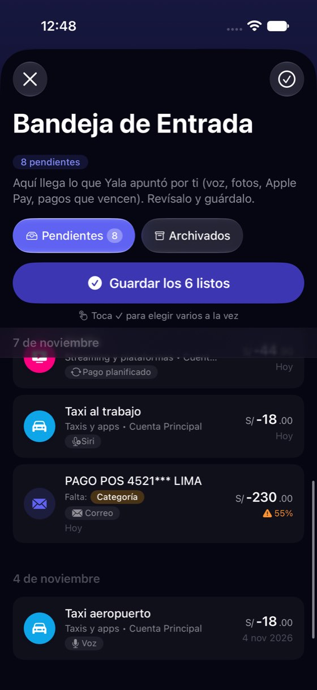
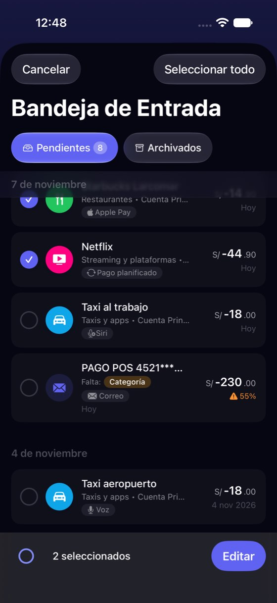
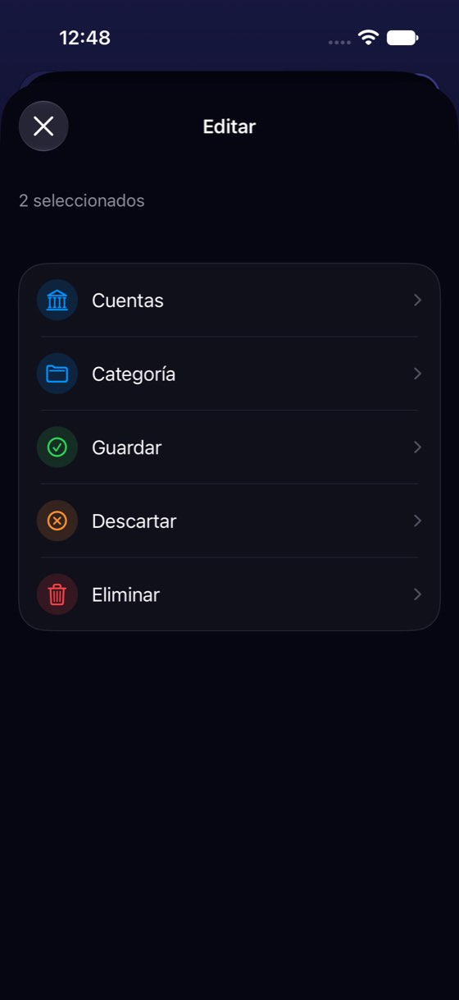
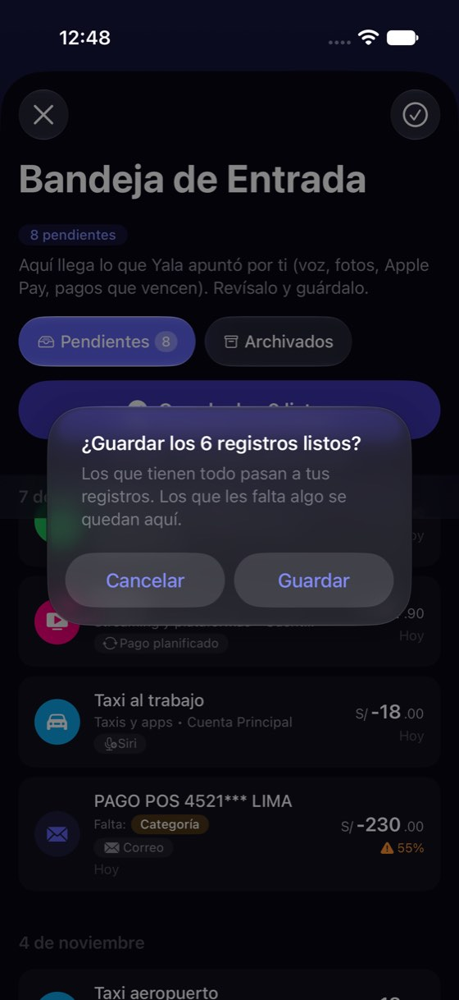
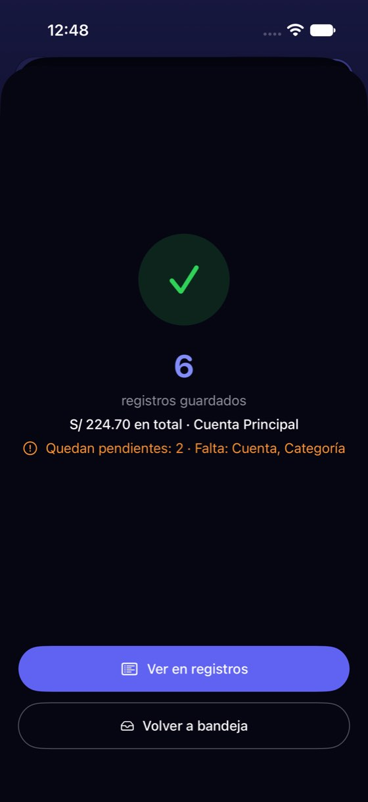

Revisar 8 borradores: el lote, la selección y el deslizamiento cuentan tres historias
Hoy
Capturas del simulador (app de origin/2.3, semillas de prueba). Pasos hoy: 6 listos: 2 toques + volver de la pantalla de éxito; los 2 que piden algo: abrir cada uno






De dónde sale
- Captura Capturas 01, 08-10: «Guardar los 6 listos», su alerta y la pantalla de éxito con «Quedan pendientes: 2 · Falta: Cuenta, Categoría».
- Captura Capturas 05-07: el ✓ entra en selección; el botón «Editar» abre la hoja «Editar» con Cuentas, Categoría, Guardar, Descartar y Eliminar.
- Captura Captura 02: la cabecera «7 de noviembre» queda sobre la fila de Netflix al desplazar. Captura 13: «Finalizar».
- Código
InboxView.swift:867-876: deslizar a la derecha hasta el final guarda (sin pista visible);InboxView.swift:573-576: el botón de la selección esL10n.Action.edit. - Código
InboxViewModel.swift:155-167: la lista se agrupa solo por fecha.
Las opciones
De 3 a 5 alternativas con el mismo caso. Desliza cada recorrido; el anillo cian marca dónde toca Lucía.
Dos grupos: «Necesitan algo» arriba, «Listos» debajo
La lista deja de ordenarse solo por fecha. Arriba, lo que pide una decisión (el dudoso y la cena); debajo, los 6 listos con su botón «Guardar los 6» en la cabecera del grupo. La fecha va en la fila solo si no es hoy, y la cabecera del día deja de pisar las filas al desplazar.
Bandeja de Entrada
8 pendientesBandeja de Entrada
2 pendientesA favor
- Lo primero que se ve es lo que no se puede guardar a ciegas.
- El lote se ve como un grupo: Lucía sabe qué 6 guarda antes de tocar.
- Quita la alerta de confirmación: «Deshacer» la sustituye (como al descartar).
En contra
- Cambia el orden por fecha, que hoy es el de Registros.
- Con muchos «Necesitan algo» el lote queda abajo.
«Repasar uno a uno»: una tarjeta por borrador
Un botón abre los borradores de uno en uno, a pantalla grande: qué es, de dónde llegó y tres botones (Guardar, Corregir, Descartar). El dudoso y el de grupo traen su pregunta en la misma tarjeta. Al terminar, el resumen.
Bandeja de Entrada
8 pendientesA favor
- Una decisión a la vez: lo que mejor funciona con poca atención (P2, P7).
- Cada borrador se ve entero, con su origen y hora.
- Encaja con la tarjeta del dudoso (problema 3).
En contra
- Una pantalla nueva y un modo más que explicar.
- Para quien ya confía (P3, P4), 8 toques en vez de 1.
El lote como lista con casillas, antes de guardar
«Guardar los 6 listos» deja de abrir una alerta genérica y abre una hoja con los 6 marcados: nombre, importe y origen. Se desmarca lo que no se quiere y el botón dice cuánto se guarda.
Bandeja de Entrada
8 pendientesA favor
- Lucía ve qué guarda antes de guardarlo (hoy la alerta solo dice «los que tienen todo»).
- Sustituye la selección con «Editar», que hoy lleva a una hoja con Guardar y Descartar.
- Poco cambio visible.
En contra
- Un paso más que hoy para quien guarda los 6 sin mirar.
- No mueve al dudoso ni a la cena: siguen mezclados por fecha.
Solo nombres y detalles de la lista de hoy
Sin cambiar el recorrido: el botón de la selección pasa de «Editar» a «Acciones» (dentro hay Guardar, Descartar y Eliminar), la fila deja de repetir «Hoy» bajo «7 de noviembre», la cabecera del día lleva fondo, y el de grupo dice «Guardar» como los demás, no «Finalizar».
Bandeja de Entrada
A favor
- Lo más barato.
- Corrige un nombre que promete otra cosa: hoy «Editar» lleva a «Guardar».
En contra
- Sigue habiendo tres caminos para lo mismo (botón del lote, selección y deslizar).
- El dudoso sigue mezclado con los listos.
Lado a lado
La última pantalla de cada recorrido, frente a hoy.
Bandeja de Entrada
2 pendientesComparación
| Opción | Pasos para el caso (maqueta) | Esfuerzo | Riesgo | Reabre |
|---|---|---|---|---|
| Hoy | 6 listos: 2 toques + volver de la pantalla de éxito; los 2 que piden algo: abrir cada uno | — | — | — |
| B1 · Dos grupos: «Necesitan algo» arriba, «Listos» debajo | 1 toque para los 6 listos + 1 por cada uno de los 2 (hoy: 2 + pantalla de éxito + 1 por cada uno) | medio | bajo | — |
| B2 · «Repasar uno a uno»: una tarjeta por borrador | 8 toques para los 8 (1 por tarjeta); el lote sigue a 1 | alto | medio | — |
| B3 · El lote como lista con casillas, antes de guardar | 2 toques para los 6 (igual que hoy), con lo que se guarda a la vista | bajo | bajo | — |
| B4 · Solo nombres y detalles de la lista de hoy | Igual que hoy | bajo | bajo | — |
Lente de perfiles
Perfiles simulados, no entrevistas Los siete perfiles de la revisión del usuario nuevo, usados como lentes. riesgo alto de trabarse · medio · bajo.
| Perfil | Hoy | B1 | B2 | B3 | B4 |
|---|---|---|---|---|---|
| P1 · Migrante de Excel | no ve qué 6 guarda | ve qué guarda | comprueba uno a uno | comprueba | — |
| P2 · Principiante abrumado | tres caminos y «Editar» que guarda | sabe qué le toca | una decisión a la vez | — | tres caminos |
| P3 · Anotador rápido que no lee | el botón grande le basta | un toque | más toques | lo mismo que hoy | — |
| P4 · Experto de otra app | busca acciones en lote claras | — | lento | control | — |
| P5 · Llega por una invitación de grupo | su gasto de grupo, mezclado | su gasto de grupo, arriba | — | — | — |
| P6 · Varias monedas y tarjeta | — | — | — | — | — |
| P7 · Texto grande, a veces en iPad | cabecera que pisa el texto | cabeceras largas con AX | tarjeta grande | hoja larga | — |
Recomendación: B1
Dos grupos, con el lote en su cabecera y «Deshacer» en vez de la alerta. Pone el dudoso y la cena delante, que es donde Lucía tiene que pensar, y deja el lote de un toque para los otros seis. Los nombres de B4 («Acciones», «Hoy», la cabecera con fondo, «Guardar» en grupo) son baratos y van con cualquiera de las dos.
Qué decide Jürgen
- ¿La Bandeja se agrupa por «necesita algo / listo» (B1) en vez de solo por fecha?
- ¿«Deshacer» tras guardar en lote sustituye la alerta de confirmación?
- ¿Se queda el deslizamiento a la derecha para guardar? Hoy no tiene pista y no mira duplicados (problema 3).
- ¿«Repasar uno a uno» (B2) como modo aparte, ahora o más adelante?
Revisión por vistas 2.3 · Bandeja, Yala IA, correo del banco, Apple Pay y Siri. Maquetas en HTML con datos ficticios: no son la app. Pasos contados sobre las maquetas; los de «Hoy», en el simulador o en el código citado.